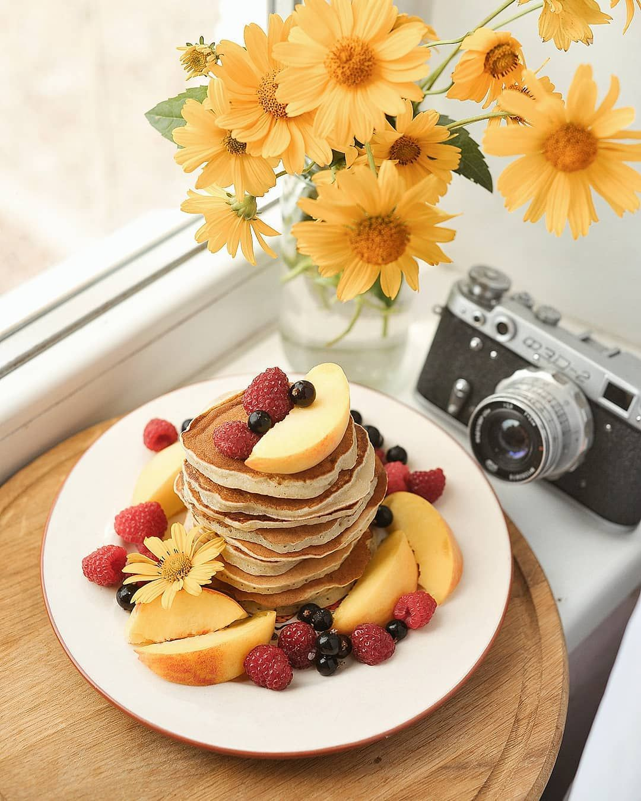
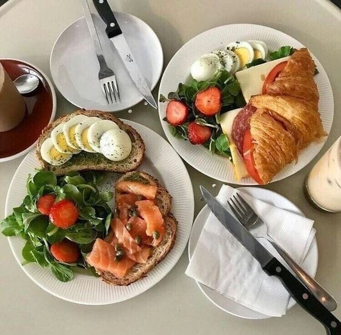
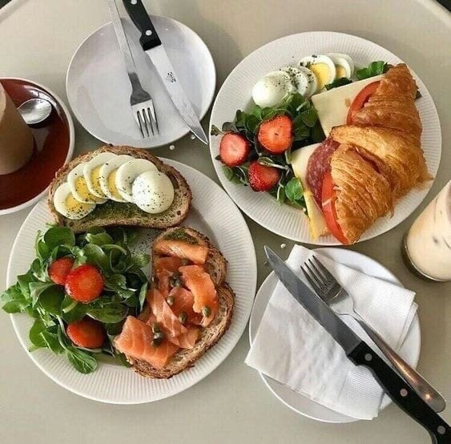
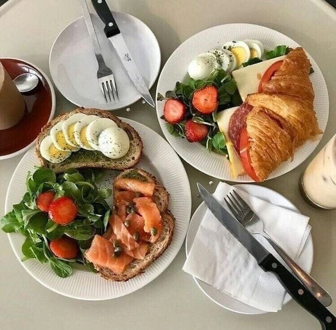
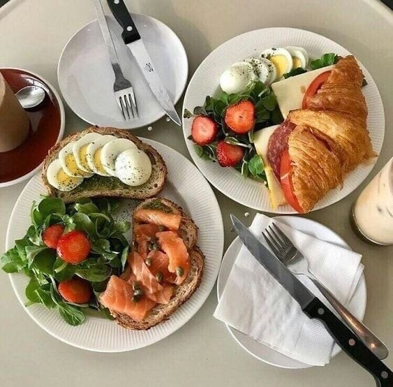
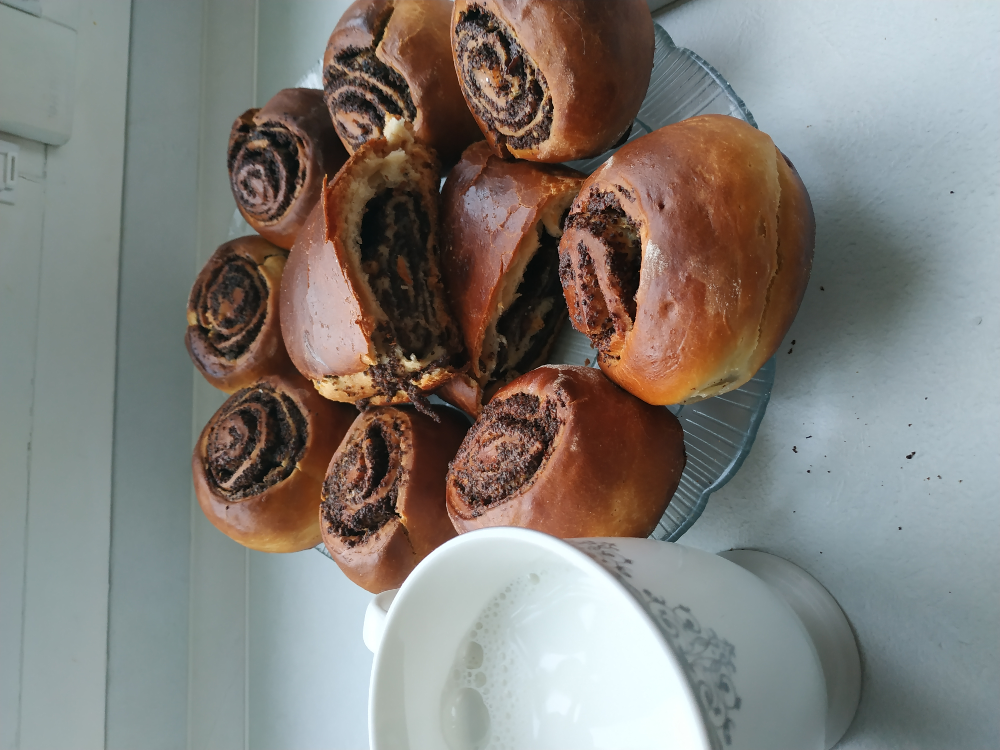
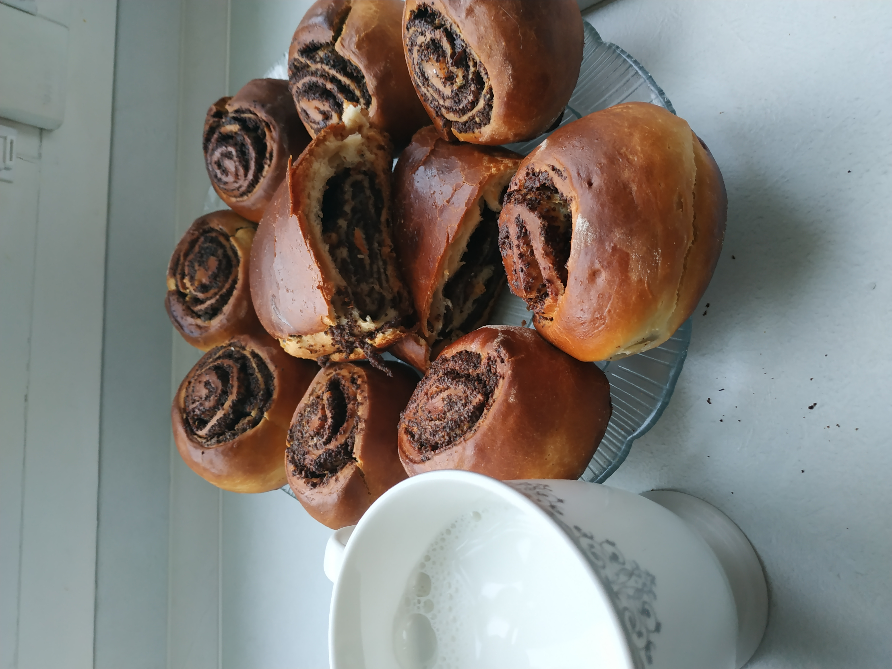

My favourite dishes

 


My favourite dishes

Еда, так же как и вода, является источником жизненных сил человека. Каждому известно — чтобы быть здоровыми, важно хорошо и полноценно питаться. Для людей важен не столько сам прием пищи, сколько связанный с этим действием ритуал. Потому мы способны наслаждаться едой: получать от этого процесса истинное удовольствие, а не просто удовлетворяя свой аппетит.

MEAL
Война войной, а обед — по расписанию. Фридрих Вильгельм I

Breakfast
Утро — прекрасное время, когда наш мозг и наше тело ещё не перегружены тяжестью ежедневной рутины и перевариванием пищи, поэтому стоит провести это время с пользой и посвятить его самому себе. Идеальное время для начала завтрака — спустя час или два после пробуждения.

Lunch
Обед должен быть самой насыщенной трапезой дня. На него приходится приблизительно 45% от всей дневной нормы калорий. Как и завтрак, он должен быть сытным, чтобы вы успешно могли завершить трудовой день.

Dinner
Ужинать лучше всего за 4 часа до сна, а непосредственно перед сном можно выпить стакан кефира. На ужин лучше всего съесть легкое белковое блюдо, например, индейку, и термически обработанные овощи. Такая еда хорошо переваривается и не мешает спокойному сну.
Долга думая на тему моё любимое блюдо я пришла к выводу, что у меня его просто нет. Я люблю различные блюда различных кухонь и не могу выделить что-то одно. Например, находясь в Минске я очень скучаю по домашней еде: бабушкиными блинчикам, маминым голубцам и т.д. Но в Минске есть огромный выбор блюд различных кухонь, где всегда можно открыть для себя какой-то новый вкус. А ещё я сама очень люблю готовить. Ниже представлены пару блюд приготовленных мной. P.S. у меня даже был заказик на юбилей. Там я готовила свои фирменные кексы.


 
